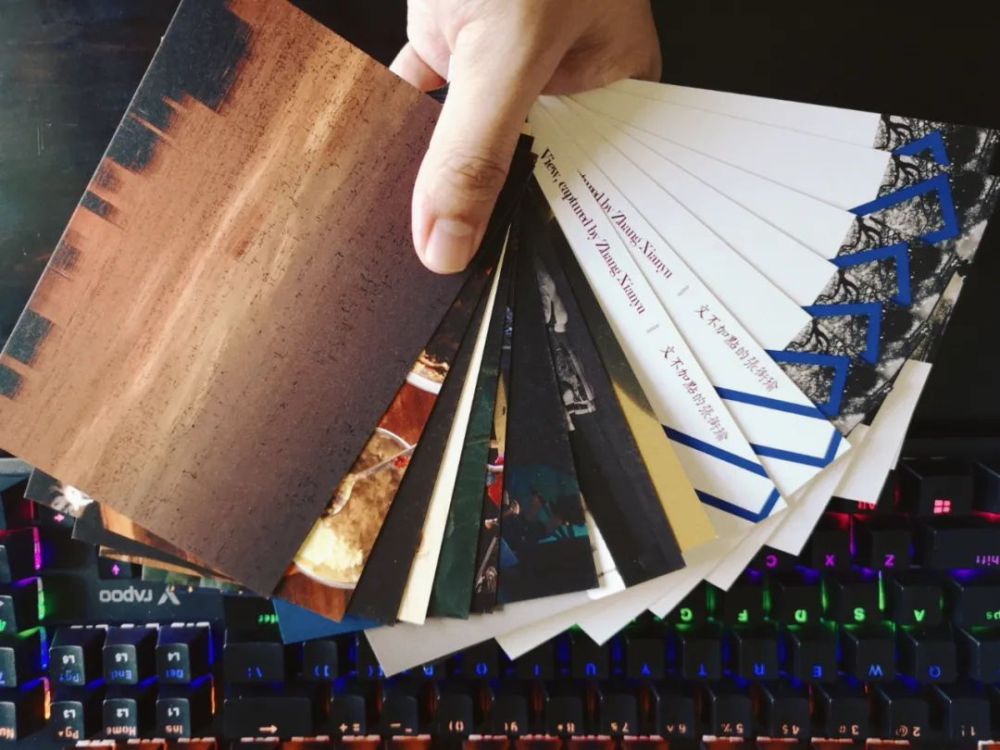

本文是张衔瑜第206篇推文
共计2481个字
写段子是一回事，怎么想的是另一回事。这是我在标题里想表达的意思。写段子，段子里有段子的起承转合。怎么想的是另一回事，也就是说前边的这些起承转合，会限制甚至钳制怎么想的。这其实是老套的形式互搏内容。没什么心意。是，我说的就是心意。
为什么要说再见呢？再见的同义词多好听，叫『前程似锦』
前几天在浪潮工作室读到一段话
但是昏天黑地忙碌了一周之后，你绝对不会只想回去睡觉。并且，睡觉是无法让你完全回魂的，如果把你和手机电脑同时放在一个房间里，你还是会不自觉地反复查看工作消息。
最近也不能说有多闲，但的确想去做一些不同contribution的内容。抱着多给家乡做一些贡献、同时也在长沙多认识一些本地同行的心态，投了许些简历出去。当然，也实际去到了单位里和应该要去交流的人有些交流。
下班之前的时间，一位不愿透露姓名的好朋友挤兑我说：“下班下的不比老板早，怎么能叫实习生？”速速呼我去吃饭。骂骂咧咧的样子像极了一幅阶级斗争狂热工人对着资本家大喊：“你工人爷爷来啦。”所幸张衔瑜没有这么暴躁。张衔瑜把该做也想做的东西，做到了该做的点，就溜溜球。
毕竟我不需要耗工作时长，也不是说这一个工作做完马上是下一个内容等着我。我所想的是给长沙，一家或者一些有缘的单位，做一些的确有用而且也对我有促进的内容。至于到底能拿到多少报酬、能连续工作几天，这些是会商量的内容，但是相对来说我看得不那么重。比如报酬，能有多少呢？实习生工资，能撑死了顶到在这座城市负担我经济独立的生活吗？存疑。但即使存疑，却也不是有多少我也不在意。如果一家单位没有边界感，甚至说在我拿出一个结果的情况下，还没有我觉得合理的酬劳表示的话：那么家门口排雷了也很好。
所以就按照一种，相对来说很个性的方式，在执行着我的实习计划。
以前我曾经和一些朋友“好言”讨论过大学生的外快问题。从事劳动力密集型：刷盘子、送外卖、非师范生或有志从教的人去做家教，我当时对这一些都存疑。咖啡店打工又稍有不同，学一些拉花的技术之余至少学校咖啡店接触到的人以及工作的环境倒与上有不同，因为打工的意味没有那么浓。咖啡店有点像盈利性的社团。
如何找到智力密集型的兼职呢？应该来说不管怎么，都得从自己的不对称优势，或者说自己的擅长之处找起。我的最擅长之处是什么呢？Being as a coordinator. 怎么证明呢？目前还证明不了，只有我自己知道；所以就只能退而求其次，选取一些具有普遍意义标准来筛选的资质性工作。
我依然记得我本科拿到的第一笔酬劳，是在写出了我本科的第一份国家发明专利之后。其他的事情有指导我的老师在负责，而由我来主要完成专利的科学内容和撰写。我开发的是一种计算方法。后来，专利里的第一发明人是我、专利权人是我的学校。指导老师说：“我知道你的化学其实学得并不算我们班上多么好的，但是你调动各种资源的能力是我很看好的。”于是我写出了一个应用于化学的计算方法，和专利申请中心接洽后、认定认证我们需要申请和声明多少权利权益，最后拿出了一份成果。
酬劳并不少，隐瞒具体数字之后，可以说有买一台全画幅相机的钱。我在此中并没有离开学业，而是正好应用了我学业内的知识，加一点我学过之后的结合就是一个发明专利。因为具体的学科背景没有变，学术的起点已经很高了，那么再添入计算科学的内容来进行建设，接下来的事情就是锻炼专利文书的撰写了。这样的智力密集型，被我认定为真的有用。我可以骄傲地把这段经历写到我的简历里。
之前说起类似问题的时候，我会轻描淡写地对一些人向浅的行为表示不解：“为什么要那样呢？不是这样这样，事情就会好起来了吗？”
现在我倒也觉得，没必要那么苛刻。如同我上述，用春秋笔法讨论的劳动密集型和智力密集型一样，也许有些人就不知道原来智力密集型还可以这么操作呢？换而言之，我在真的完成这些事之前，我就一定知道我能做到这样，并且获得对应的体验吗？
好像现在有些空下来，又重新回归紧张生活的时候，会感觉对生活的认识又上升了一些。不是工作需要我，而是我需要工作。写段子是一回事，段子手想了多深你根本想象不到。
心水最近的这一堆打印的明信片，包括顺手自定义的背面。背包，就会带着在路上走。像一些社会人随手递烟出去地，我在没有外事的时候坐下，就会递一沓明信片给别人“挑几张咯都是我拍的，送给你啦”
不记得我有没有在公众号里提过这个故事，但最近写在Monthi_yu7了(不用纠结这个可能过几天就会变)。之前在坡的时候，我会随缘给人送花。有一次从City Hall附近的缅甸商店带了四束花，因为那里的花比较便宜而且品质也还不错子。买了之后，我们就用自己运过去的黄褐色英文报纸包装纸扎好。其中，有一束没想好给谁。隔壁组同学那会儿一起走，碰上一位师兄下晚班，就随缘给了隔壁组的师兄。师兄的生活比较具体。不曾想，一束缅甸商店五新币的花，无意中成了他和他老婆那一段时间的精神支柱：『你送我的那束花我后来带回去，我老婆可高兴了。而且花也没完全开，那段时间每天都会见到不一样。我老婆天天都会侍弄它们，看花慢慢开、又慢慢谢，真的可开心了。我看到我老婆开心，我也感觉好开心，每天都有希望。』在路上遇到师兄 我说我要离开了，师兄就告诉了我上面这一段。师兄说没有好好谢谢我，我说你的故事都快要把我讲哭了。
所以我最近送明信片也都送得很随性。毕竟是我自己拍的，人家要挑，我就让ta慢慢挑。挑多少我都无所谓。原想不会真的有人一张也挑不出来吧，后来发现还真有(不过也好好解释了说自己不收藏明信片也不知道放哪)其实我也会介绍介绍，这张是我哪天，什么场合什么心情 为什么这么拍。诸如此类。不说也像那束花一样具有这么强烈的情感冲击，但或许也能带去一些生活憧憬吧。
有特别想要哪一张的就打钱啦！！！！！！可恶
如果还想打几张的话(做梦)可以试试开这个口看看会有什么好果子

如果能看到这里的话也可以直接找我拿(坐标长沙市区远了的话邮费自理)不要被生活捶瘪罢辽。或者我下次到了新的城市，没事，再说。我甚至想本来每一个公历年年底的时候我都会总结今年的100图。我在想今年要不要印一部分出来当成新年礼物送给朋友。呼，还好相片都是电子版的。这样的home-made又不需要自己太多操作，只要收发就可以了。真好。